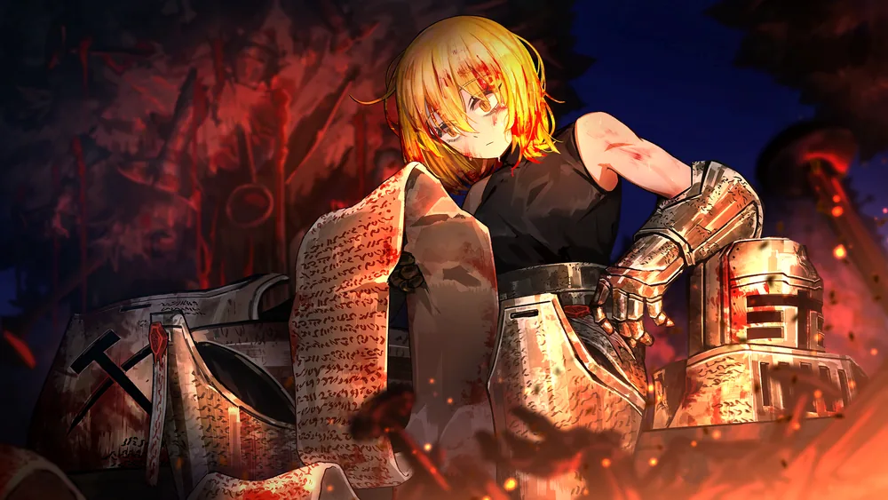

Thou Shalt Hammer!
If the target has Nails, inflict +1 Tremor Count. If this unit is Fanatic, inflict +1 Nails.

Rightful Purge
Enactment!
Fanatical Judgement
Guard
If the target has Nails, inflict +1 Tremor Count. If this unit is Fanatic, inflict +1 Nails.
1 Fanatic ally that has the least SP deals +10% damage
Identity Acquisition
The hammer of justice purgeth evil. Dost thou require mine aid? Fuhuhu...
Morning Greeting
...Ah, mine apologies. I give little heed to other sounds whilst I am focused on the doctrine. Hath the time for breakfast come?
Afternoon Greeting
When the night falleth, I shall be occupied with delivering justice... I must use this time to read the remaining passages...
Evening Greeting
...Heeheek?! Ah, hah... The masque... Will you please unmasque yourself at ordinary times? The dark made me mistake you for a heretic to purge...
Chatter #1
In 6:18... "Yet I shall forge a vow with thee..." Heehee! A vow decreed by the One Who Grips... Heeheeheek!
Chatter #2
An overabundance of evil prevaileth in the world... As the One Who Grips beeth simply too busy to purge them all aone, I aid her.
Chatter #3
Ahh, so of this parchment you are curious. I transcribed the text myself... I cannot be in company with the passages of the One Who Grips at all times if they are confined to their tomes, can I...? Heeheeh.
Post-Uptie Chat 1
This hammer beeth like a judge's gavel to me. With it, I aim for the heart of evil... and deliver judgement upon it.
Idle
I cannot let precious rest go to waste.
Uptie
Keehee! Ahahahah! Upstanding...! Purging.
Deployment
...Mm, let us advance.
Stage Entry
Evil shan't keep its proper form.
Viewed in Battle
Hahahahah! Ah, you were by the side!
Commencing Attack
I shall pierce thee!
Enemy Stagger
*Maniacal Laughter*
Staggered
*Maniacal Laughter*
Enemy Killed
Rightly executed.
Death
Krh... There are still—deeds undone...
Check Passed
'Twasn't a difficult task.
Check Failed
...This puzzleth me.
Victory Cry
Hmm... Doth it be time for rest?
Extra Conditions Fulfilled
This scenery... Oh, how beautiful the lands become once trodden by the hammer of justice!
Defeat Wail
Eheeheehee... Perchance... I was powerless... to purge evil.
Sumber data: Limbus Company Wiki. Angka dan teks mengikuti versi wiki saat situs ini dibangun.